[Deep Learning] Cơ sở về mạng thần kinh
Mục lục:
- 1. Mô hình Neuron
- 2. Perceptron và mạng thần kinh
- 3. Thuật toán BP
- 4. Các mô hình phổ biến
- 5. Học sâu
Hiện nay, Deep Learning (DL) đang cực kỳ phổ biến và tạo ra những cuộc cách mạng không chỉ trong AI mà còn trong mọi lĩnh vực đời sống. Để bắt đầu, bạn cần làm quen với khái niệm Mạng thần kinh nhân tạo (ANN).
Tại sao lại nói là "chú ý trở lại"? Thực tế, nghiên cứu về mạng thần kinh đã có từ rất sớm nhưng từng rơi vào thoái trào, cho đến khi Hinton đạt được những đột phá mới. Bài viết này sẽ tổng kết các kiến thức cơ bản nhất.
1. Mô hình Neuron
Neuron là đơn vị cơ bản nhất, lấy cảm hứng từ cơ chế truyền tin sinh học: Hưng phấn và Ức chế. Khi điện thế vượt qua một ngưỡng (threshold) nhất định, neuron sẽ được kích hoạt ("hưng phấn") và truyền tín hiệu đi.
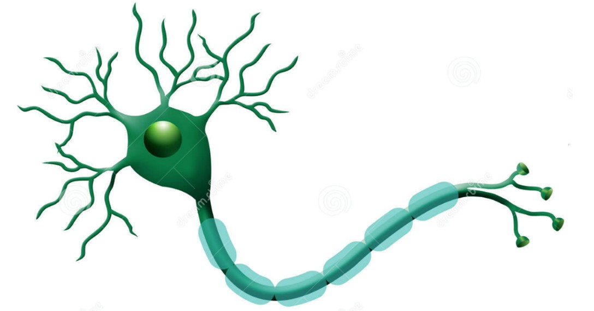Năm 1943, McCulloch và Pitts đã mô phỏng cấu trúc này bằng mô hình toán học đơn giản gọi là "Neuron M-P":
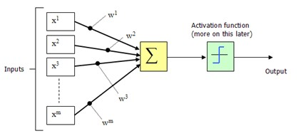Đầu ra của neuron được tính bằng:
$$ y = f(\sum_{i=1}^{n} w_i x_i - \theta) $$Trong đó $\theta$ là ngưỡng kích hoạt, $f(\cdot)$ là hàm kích hoạt. Thay vì dùng hàm bước nhảy (step function) quá cứng nhắc (không liên tục, không thể lấy đạo hàm), người ta thường dùng hàm Sigmoid.
Biểu thức và đồ thị hàm Sigmoid:
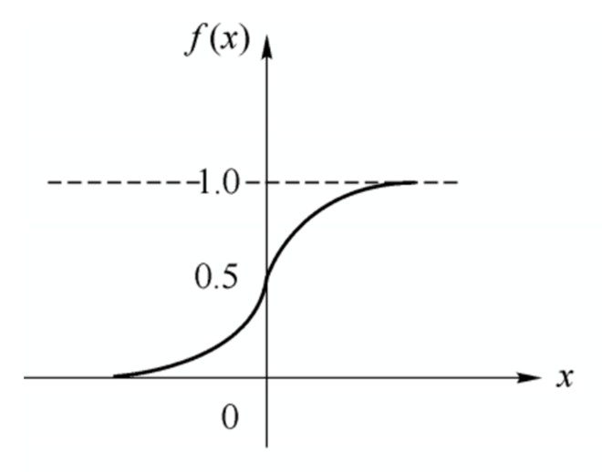2. Perceptron và Mạng thần kinh (Neural Network)
Perceptron là một cấu trúc được tạo thành từ hai lớp neuron: lớp đầu vào dùng để nhận tín hiệu từ bên ngoài, và lớp đầu ra (còn được gọi là lớp chức năng của Perceptron) chính là các neuron M-P.
Hình dưới đây minh họa cấu trúc của một Perceptron có lớp đầu vào gồm ba neuron (ký hiệu lần lượt là $x_0, x_1, x_2$):
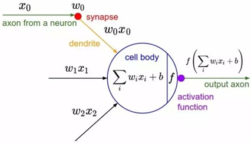Dựa vào hình trên, có thể dễ dàng hiểu được mô hình Perceptron được biểu diễn bằng công thức sau:
$$ y = f(\sum w x + b) $$Trong đó, $w$ là trọng số kết nối từ lớp đầu vào đến lớp đầu ra, $b$ đại diện cho độ chệch (bias) của lớp đầu ra.
Thực tế, Perceptron là một mô hình phân loại tuyến tính kiểu phân biệt (discriminative), có thể giải quyết các vấn đề logic đơn giản như AND, OR, NOT vốn có đặc tính tuyến tính (linearly separable).
Hình minh họa cho bài toán phân tách tuyến tính xem tại đây:
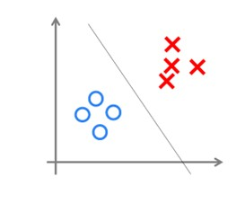Tuy nhiên, vì nó chỉ có một lớp neuron chức năng, khả năng học tập rất hạn chế. Thực tế đã chứng minh rằng Perceptron đơn lớp không thể giải quyết bài toán phi tuyến đơn giản nhất — bài toán XOR (loại trừ).
Có một giai đoạn lịch sử về việc Perceptron giải quyết bài toán XOR mà chúng ta nên biết: Thuở sơ khai, mọi người quá hào hứng mà không nhận ra Perceptron chỉ làm được các nhiệm vụ phân loại tuyến tính đơn giản. Cho đến khi Minsky - một "người khổng lồ" trong lĩnh vực AI - chỉ ra điều này trong cuốn sách "Perceptrons" (1969). Ông đã chứng minh toán học về điểm yếu của Perceptron, đặc biệt là việc không giải quyết được logic XOR.
Minsky cho rằng nếu tăng lên hai lớp tính toán thì khối lượng tính toán sẽ quá lớn và không có thuật toán học hiệu quả. Do tầm ảnh hưởng của ông, nghiên cứu về mạng thần kinh đã rơi vào "kỷ băng hà" (AI Winter) suốt gần 10 năm, cho đến khi những nghiên cứu về mạng thần kinh hai lớp giúp lĩnh vực này hồi sinh.
Chúng ta biết rằng hầu hết các vấn đề trong cuộc sống không phải là tuyến tính. Để giải quyết các bài toán phi tuyến, chúng ta cần đưa vào khái niệm "đa lớp". Nếu đơn lớp không giải quyết được XOR, chúng ta dùng Perceptron đa lớp.
Hình dưới là minh họa Perceptron hai lớp giải quyết bài toán XOR:
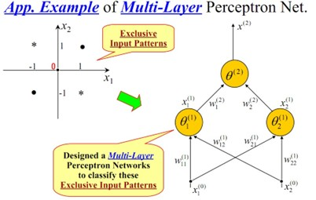Sau khi xây dựng mạng lưới trên, thông qua huấn luyện, mặt phân loại cuối cùng thu được như sau:
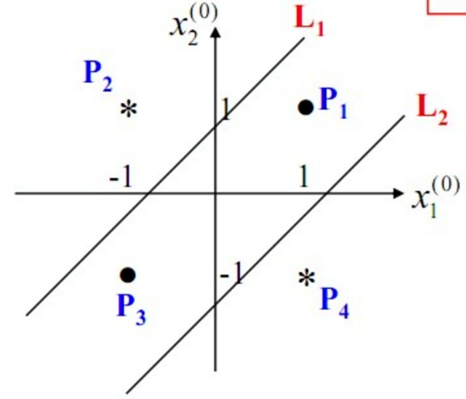Có thể thấy, Perceptron đa lớp (thường được gọi là Mạng thần kinh) giải quyết rất tốt các vấn đề phi tuyến. Tuy nhiên, đúng như lo ngại của Minsky, thực tế phức tạp hơn XOR nhiều. Chúng ta cần xây dựng các mạng nhiều lớp hơn, và việc xác định thuật toán học cho chúng là một thách thức lớn.
Ví dụ, một mạng có 4 lớp ẩn như hình dưới đây có ít nhất 33 tham số (chưa tính bias), làm sao để xác định chúng?

3. Thuật toán Lan truyền ngược (Backpropagation - BP)
Mục đích chính của việc huấn luyện mạng thần kinh là thông qua thuật toán để tìm ra các tham số (trọng số kết nối và độ chệch) tối ưu. Người thiết kế sẽ dựa vào bài toán thực tế để tạo cấu trúc mạng, còn tham số sẽ được tìm thấy thông qua việc lặp đi lặp lại các mẫu huấn luyện.
Thuật toán thành công nhất chính là Lan truyền ngược (BP). Nó thường được dùng trong các mạng thần kinh tiến (feedforward) đa lớp.
Quy trình chính của thuật toán BP:
- Đầu vào: Tập huấn luyện $D$, tốc độ học (learning rate).
- Quy trình:
- Khởi tạo ngẫu nhiên trọng số và ngưỡng trong khoảng (0, 1).
- Lặp lại (repeat):
- Với mỗi mẫu $(x_k, y_k)$ trong $D$:
- Tính toán đầu ra dựa trên tham số hiện tại.
- Tính toán gradient của các neuron lớp đầu ra.
- Tính toán gradient của các neuron lớp ẩn.
- Cập nhật trọng số kết nối và ngưỡng.
- Kết thúc vòng lặp (end for).
- Cho đến khi đạt điều kiện dừng.
- Đầu ra: Mạng thần kinh với các tham số đã xác định.
4. Các mô hình mạng thần kinh phổ biến
4.1 Máy Boltzmann và Máy Boltzmann hạn chế (RBM)
Đây là các mô hình dựa trên "năng lượng". Việc huấn luyện là để tối thiểu hóa hàm năng lượng. Máy Boltzmann tiêu chuẩn là mạng kết nối toàn bộ nên độ phức tạp tính toán rất cao. Do đó, chúng ta thường dùng RBM (không kết nối trong cùng một lớp, chỉ kết nối giữa các lớp).
4.2 Mạng RBF
Mạng hàm cơ sở xuyên tâm (RBF) là mạng tiến đơn lớp ẩn, sử dụng hàm RBF làm hàm kích hoạt cho lớp ẩn.
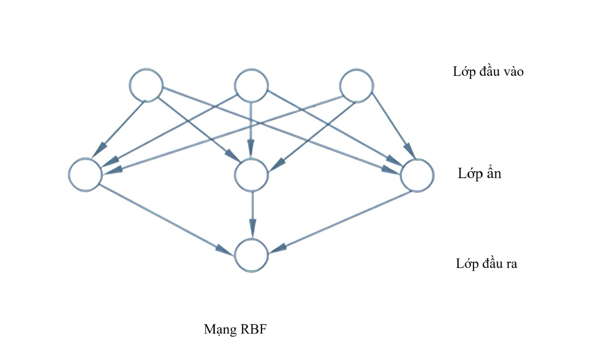4.3 Mạng ART
Đại diện cho việc học cạnh tranh, giúp giải quyết mâu thuẫn giữa tính dẻo (học cái mới) và tính ổn định (nhớ cái cũ).
4.4 Mạng SOM
Mạng tự tổ chức giúp ánh xạ dữ liệu cao chiều xuống không gian thấp chiều (thường là 2D) mà vẫn giữ được cấu trúc liên kết.
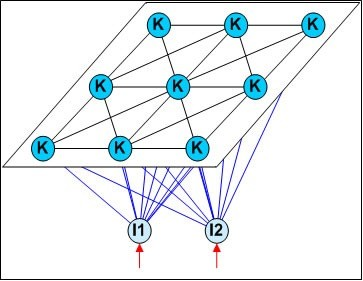4.6 Mạng thần kinh hồi quy (RNN) và mạng Elman
Khác với mạng tiến, RNN cho phép xuất hiện các cấu trúc vòng lặp, giúp đầu ra tại thời điểm $t$ phụ thuộc vào cả đầu vào hiện tại và trạng thái tại thời điểm $t-1$. Điều này cực kỳ hiệu quả cho dữ liệu chuỗi thời gian.
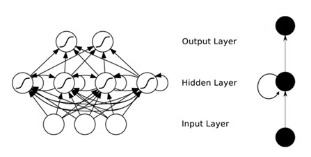5. Deep Learning (Học sâu)
Deep Learning chỉ các mô hình mạng thần kinh sâu, thường là các mạng có từ 3 lớp trở lên. Tầng lớp càng sâu, khả năng mô tả thực tế càng mạnh nhưng lại dễ gặp vấn đề "biến mất gradient" (vanishing gradient) khi huấn luyện bằng thuật toán BP truyền thống.
Một giải pháp hiệu quả là "Huấn luyện không giám sát từng lớp" (unsupervised layer-wise training) hay còn gọi là "Pre-training", sau đó mới tiến hành "Fine-tuning" (tinh chỉnh) toàn bộ mạng.
Một chiến lược khác để giảm chi phí huấn luyện là "Chia sẻ trọng số" (weight sharing), vốn đóng vai trò cốt lõi trong Mạng thần kinh tích chập (CNN).
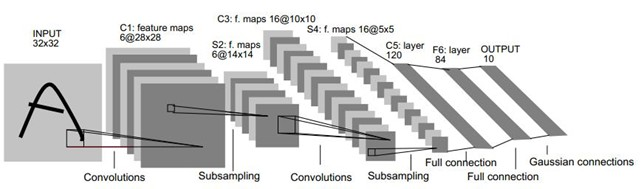